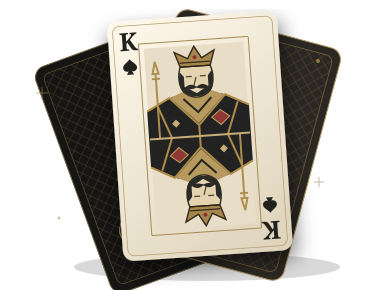

SPADE K / FIRMWARE STATION
Tu dispositivo.
Tu siguiente versión.
Una estación de flasheo privada, precisa y hecha para tu hardware.

♠ / KEl control está en tus manos
◈
Comprobando el navegador…
CHECKING02 / WORKSPACE
Sin conectarEstación de flasheo
HARDWARE
Cargando dispositivos…
01
CONEXIÓN LOCAL
PendienteConecta tu dispositivo
Modo de grabación BW16
- Mantén pulsado BOOT/BURN.
- Pulsa RST.
- Suelta BOOT y elige el puerto.
Esperando puerto local
Conecta el USB y selecciona el puerto en el navegador.
Solo se accede al puerto que autorices en este ordenador.Navegador compatiblePuerto autorizadoChip comprobado
02
CATÁLOGO DEL REPOSITORIO
Selecciona el firmware
03
ESCRITURA SEGURA
PendienteEscribe y verifica
01
Dispositivo conectadoVerificaremos el chip.
○02
Firmware disponibleDesde el repositorio.
○03
Confirmación finalRevisa modelo y revisión.
○Esperando firmware oficial0%
Terminal del procesosesión local